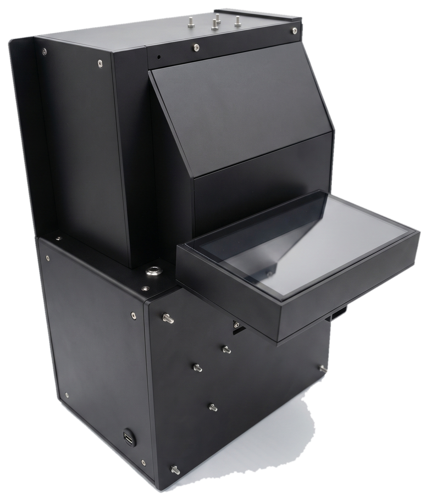
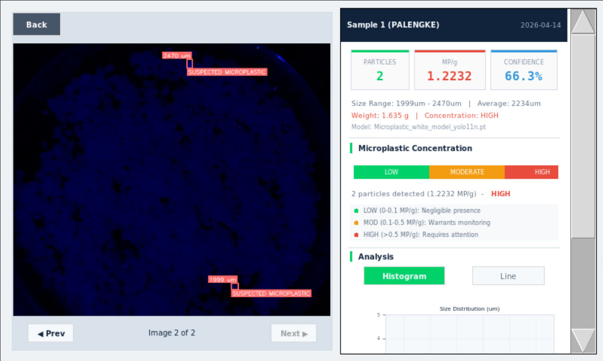
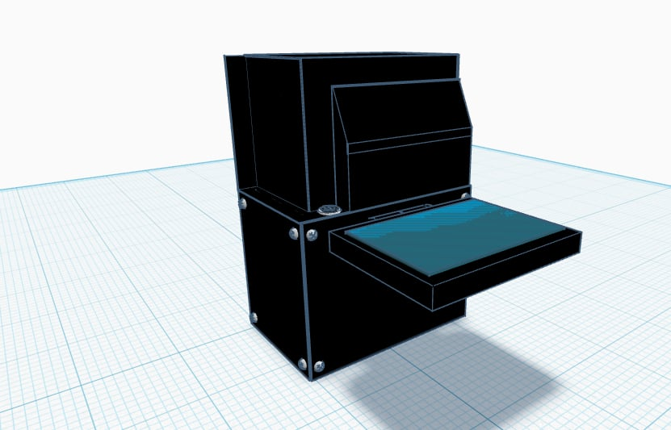
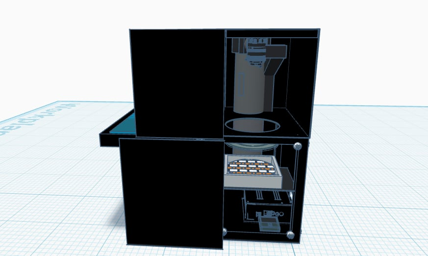

Featured capstone
MICROTECT: AI-assisted microplastic detection.
Automated optical detector for rock salt screening using Raspberry Pi image capture, YOLOv11 detection, a result UI, and generated reports.
- Problem
- Manual microscopy can be slow, inconsistent, and hard to repeat.
- System
- Sample tray, camera, Raspberry Pi 5, YOLOv11 model, touchscreen UI, and report output.
- Measured result
- 69.71% mean detection consistency, precision 0.826, and mAP@50 of 0.814.



